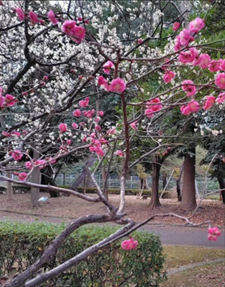

2026-01-21 18:06:35
2026年1月21日（水）平塚総合公園 曇り~晴 8時4.0度 担当（佐藤）
| No | 白鷺 | 氏名 | 種目 | タイム | フル百 |
|---|---|---|---|---|---|
| 1 | 299 | 井出 優子 | フル | 5:56:10 | 856 |
| 2 | 11 | 渡辺 富夫 | フル | 6:49:14 | 69 |
| 3 | 143 | 天野 稔 | フル | 7:15:29 | 780 |
| 4 | 98 | 田中 国貞 | フル | 8:04:48 | 746 |
| 5 | 30 | 竹田 昭彦 | フル | 9:12:37 | 3 |
| 6 | 403 | 飯田 和好 | 20.4km | 2:45:34 | 881 |
| 7 | 32 | 金子 正典 | 20.4km | 3:25:07 | 253 |
| 8 | 124 | 村川 進 | 11.9km | 1:36:36 | 781 |
| 9 | ― | 吉村 貴志 | 11.9km | 伴走 | ― |
| 10 | 340 | 島田 八十美 | 10.2km | 1:55:58 | 830 |
| 11 | 145 | 植田 秀夫 | 5.1km | 1:01:00 | 787 |
| 12 | 208 | 古橋 和子 | 5.1km | 1:20:00 | 565 |
竹田さんスタート 3時13分
夜明け前、氷雨が降るなど寒かったです。
だが、4人が夜明け前のアーリーでした(M3、W1)
すもう場手前の早梅が、五分咲きになりました
